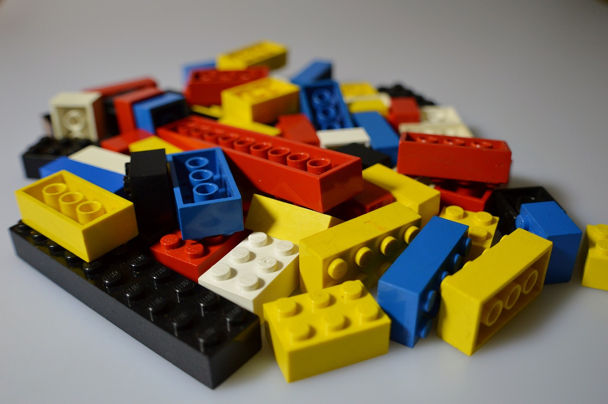
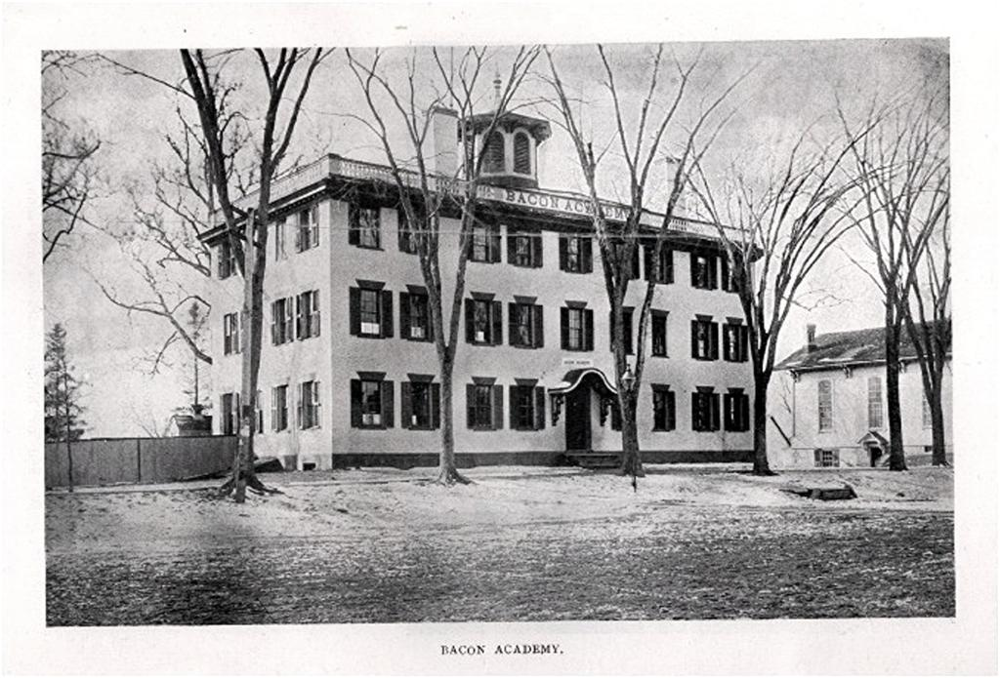
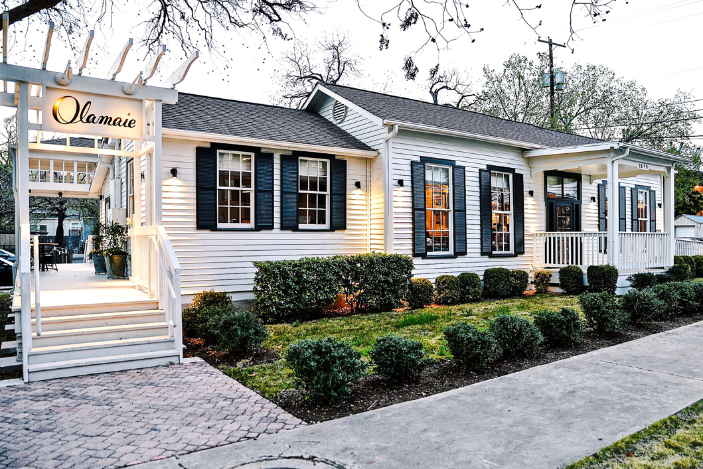

Don't
think.
Home
About Me
Portfolio
About Me
A timeline...
March 1989
Steven Walter Carson is born to Tim & Jane Carson in Middlesex, CT
March 1994
Steven recieves his first LEGO set

December 1996
The Carson's get their first PC, The Gateway 2000, Steven discovers the internet
September 2005
Steven takes his first cooking class
June 2007
Steven graduates from Bacon Academy, the oldest high school in the United States

September 2007
Steven attends the Culinary Institute of America in hopes of becoming a chef
August 2010
Steven graduates with his Bachelors in Culinary Arts Management
September 2010
Steven moves to Maryville, TN, to work at Blackberry Farm, an exclusive country resort
June 2011
Steven moves to San Francisco to work at Quince, a one Michelin-star, fine dining restaurant (two stars before leaving)
January 2013
Steven moves to Austin, TX, to help open "Olamaie" a fine-dining, Southern restaurant as their Assistant General Manager
August 2014
Olamaie opens!

April 2015
Steven is promoted to General Manager
June 2016
Steven decides to change careers after learning about Austin Coding Academy
October 2016
Steven attends Austin Coding Academy
www.mapswebsite.org